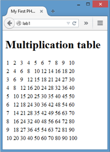

Note
I personally be using my own Ubuntu system and not a VM. You are free to do whichever you wish, but the VM environment below can be quite slow.
Introduction to Vagrant and PHP with text editor, Home setup¶
Part 1 – Vagrant virtual machine provisioning¶
We are using Vagrant in this course to ensure all students have the same virtual machine configured on all lab computers and at home. Vagrant is a tool that greatly helps sharing Virtual Machines with the exact same configuration. The vagrant box that we use is Homestead, which is recommended by Laravel (a PHP framework that we will use later in the semester).
Homestead has the following development stack preinstalled: Ubuntu Linux, NginX web server, PostGres database, PHP.
In the first part of the lab, we will explore our system, make sure that we can boot the virtual machine on the lab workstation and execute a basic PHP script.
Create the Homestead folder¶
Copy the folder S:\\CompSci\\524\\Homestead to your H: drive. You should
now have H:\\Homestead directory with the same contents as
S:\\CompSci\\524\\Homestead.
Create the shared folder¶
One of the really nice features of Vagrant is how easy it is to get both the host system (Windows 10 machine) and the virtual machine (Ubuntu) to see and share the same directory.
Create a folder called PHPCode in your H: drive. You will save all your labs and projects in this folder. Create the following directories within PHPCode to match the lab setup:
labs
badresto
reader
dawson
news
todo
(spoiler: these are some of the labs and projects you’ll be working on this semester!)
Get your ssh keys¶
Check if you already have a .ssh folder in your home directory (H: drive
should be setup as your $HOME in the labs). If you have an .ssh
directory, you have already generated ssh keys (probably for git). If
not:
Open a Git Bash console in your H drive (right-click in Windows Explorer, Git Bash Here)
Make sure you are in H: > pwd
Run these commands:
1 | $ mkdir -p .ssh && cd .ssh |
1 | $ ssh-keygen -t rsa -b 4096 -C "youremail@address.here" |
/h/.ssh/id\_rsa
Boot the virtual machine configured for the PHP course¶
You will be doing this every lab:
Open a Git Bash window in H:/Homestead (right-click in explorer). This
opens a Bash shell emulator on your Window system.
Make sure you are in /h/Homestead
Run this command:
1 | $ vagrant up |
When this command finishes (a few minutes) your Virtual Machine is up and running!!
SSH into the virtual machine¶
Our Ubuntu VM is headless – meaning that we don’t have a GUI interface to Linux. Yay Command line only
Whenever you want to log into the booted VM (e.g., to check the
configuration or access the database), type in this command from your
Git Bash window in H:\\Homestead.
1 | $ vagrant ssh |
cd to the Code directory; you are now in the PHPCode shared folder
So the H:/PHPCode folder in Windows is the same as the
/home/vagrant/Code folder in the VM.
NOTE: there is a known Vagrant bug where you may not see the command prompt while
ssh-ing with vagrantssh. If that is that case, exit and tryssh vagrant@192.168.10.10, with passwordvagrant
This “magic” of the shared directory is courtesy of the Homestead.yaml
file. If you open it in Notepad++ (or use less or nano or vim from the
Linux side), you’ll see a section that indicates the folder mapping.
Run a simple script¶
Once the VM is up and running, we can run PHP scripts.
Copy S:/CompSci/524/lab0 to your H:/PHPCode/labs folder.
Open a browser (hint: Firefox is my favourite), and go to http://labs.app/lab0
You should see a page that contains output of the PHP configuration on the VM. Don’t worry too much about the content, if you see it, you know your VM is serving up your PHP files as required.
How does this work?
All the lab computers have been set to associate certain hostnames to itself: you can see this in the file
C:/Windows/System32/drivers/etc/hosts
Notice, for example, that the host labs.app is associated with the IP
address 192.168.10.10 (in fact all hostnames are associated with this IP
address). The hosts file enables you to override the DNS for a domain on
that machine. Your machine will look at the IP address provided
(192.168.10.10) instead of going through a DNS. This IP address
(192.168) is in the private IP address range, so we can map with no
worries.
Now look at H:/Homestead/Homestead.yaml: you will see that the IP
address is the one being used by you Vagrant VM 9and its NginX web
server. Further down, you see that the sites are associated with
different folders in VM; these folders are all in the shared
/home/vagrant/Code folder (which is your H:/PHPCode folder)
If you open tChe lab0/index.php file, you will a single line in the php
tags – phpinfo() is the function that outputs the PHP configuration.
NginX, the web server, is configured by default to return index.html,
index.html directly, or interpret index.php through the PHP interpreter.
That’s what happened when you browsed to labs.app/lab0.
Create and debug your own PHP Script¶
Create a folder H:\\PHPCode\\labs\\lab1 (or in the Linux VM
Code/labs/lab1 in the VM), and write a PHP script named index.php that
will create the output as shown in the image, using a text editor like
Notepad++ or Atom.
-
 use HTML5 tags, including doctype and html tag
-
the php code will fill in the contents of a table, with echo’s within a nested loop
-
no styling is required
-
recall: PHP variable names start with $; for loops look pretty much the same as java.
-
PHP coding conventions use the “Egyptian brackets”/”K&R style braces” in control structures – which means the opening brace is written on the same line as the conditional clause and the closing brace is always written on its own line.
E.g.:
1 2 3 4 5 | if ($a != 2) {
$a = 2;
}
|
Testing the PHP Script¶
Browse to http://labs.app/lab1. Since we named the file index.php, NginX will open it by default. If you named it something else, write it in the address bar.

The results of the program should appear!
Recall: Firefox (as well as the other major browsers) come with a suite of developer tools. Open the menu in Firefox, select Developer and Toggle Tools (or Ctrl+Shift+I). You will see the http messages and other information that is very useful when debugging web applications.
Shutting down the VM¶
Use the command vagrant halt to gracefully shutdown your VM. Note that the VM is subject to deep-freeze, so any changes anywhere except the shared folder will be lost the next time you log in.
SOLVING INTERMITTENT 502 BAD GATEWAY ISSUES¶
If you are victim, you may have to make sure that nginx and php config match:
Go to /etc/php/7.1/fpm/pool.d/ , edit www.conf (use sudo nano) and edit
the line listen = /run/php/php7.1-fpm.sock to
listen = var/run/php/php7.1-fpm.sock
Exit and save the file, then run sudo service php7.1-fpm restart
Setting up your laptop/home system¶
The following instructions are provided for a Windows 7.1+ syste, If you are running Linux or IOS, the steps will be simpler. See this link, and compare to the notes below.
-
make sure your BIOS/UEFI supports hardware virtualization and it is enabled
-
make sure HyperV is disabled (Control panel - uninstall a program – program and features – turn Windows features on/off – uncheck HyperV)
-
install Git for Windows to have gitbash: https://git-for-windows.github.io
- choose default install options (select Windows Explorer Integration. Select Use Git from the Windows Command Prompt radio button so that Git can be run from the command line.)
-
install VirtualBox 5.1.x (latest version) : https://www.virtualbox.org/wiki/Downloads
-
install Vagrant 1.9.x (latest version): https://www.vagrantup.com/downloads.html
-
if desired, setup your hosts to be the same as school
-
open Notepad as admin
-
Edit C:/Windows/System32/drivers/etc/hosts (nb: make sure Notepad is looking at all files, not just .txt)
-
Add to the end:
1 2 3 4 5 6 7 8 9 10 11 | 192.168.10.10 dawson.app 192.168.10.10 news.app 192.168.10.10 todo.app 192.168.10.10 labs.app 192.168.10.10 reader.app 192.168.10.10 badresto.app |
-
decide where you want your Homestead and PHPCode directories and make them
-
In the containing directory:
-
open gitbash
-
run the following commands:
1
$ vagrant box add laravel/homestead
1
$ git clone https://github.com/laravel/homestead.git Homestead
1
$ cd Homestead1
$ git checkout v5.4.0
1
$ bash init.sh
- edit the
Homestead/Homestead.yamlfile (look at the one you have in yourH:drive)
-
-
in the folders section, provide to mapping to the PHPCode folder you created in step 8. e.g.,
folders:
- map:
h:/PHPCode
to: /home/vagrant/Code
- if you added the sites to the
etc/hostsfiles, also add them to theHomestead.yaml. For example:1 2 3
sites: - map: labs.app
to: /home/vagrant/Code/labs
-
each time you want to boot up:
vagrant up -
to ssh in: either
vagrant sshorssh vagrant@192.168.10.10, with passwordvagrant -
to shut down:
vagrant halt
Debugging your system¶
When you vagrant up, if you get the message that a Virtual Machine with the name Homestead-7 already exists, it indicates that you VM was not shutdown correctly.
To fix this:
- find the Oracle VM VirtualBox application and open it
- you will notice a VM called Homestead-7 which is running
- right-click on it to close it
- right-click on it to remove it and delete all files
- close your bash window, reopen, and retry
- if you still have issues, you may have to delete folders: in the
Homestead\.vagrant\machinesfolder as well as theVirtualBox VMs\folder. Always close and reopen your bash window.
if you need to edit your Homestead.yaml file, make sure that vagrant halt first. Once the file is saved, start vagrant with the command vagrant up --provision. This will ensure that vagrant re-reads the Homestead.yaml file.
The Homestead.yaml file is notoriously sensitive to bad spacing. This may be a cause of issues that you encounter
One really unfortunate side-effect of Dawson’s deep freeze system is that changes that you make to the VM get lost every time you logout (changes to the php config files, or your database, or installation of tools, or …). This can get irritating. If possible, you may prefer to use your laptop in the labs.